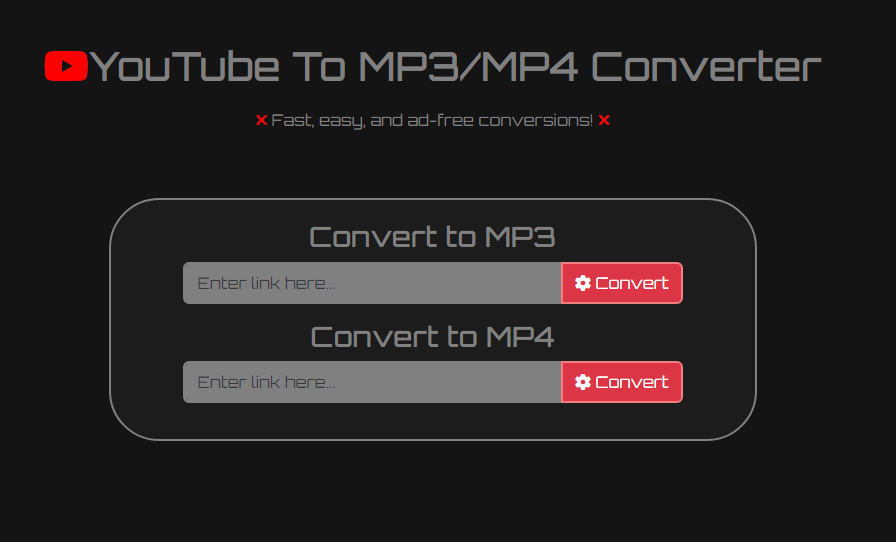

Youtube to MP3-MP4 Converter
This is a full-stack web application that allows users to convert YouTube videos and shorts into downloadable MP3 audio files or MP4 video files. The application features a clean, dark-themed interface with a simple input field where users can paste YouTube URLs. It uses RapidAPI services to handle the conversion process and provides direct download links for the converted files
9
Technology Used
4
Key Features
Tech Used

Key Features
- Converts videos to MP3 and MP4 formats
- Supports converting both regular YouTube videos and Shorts through intelligent video ID extraction
- Has robust error handling with validating URL inputs and providing user-friendly error messages on failure
- Uses RapidAPI services to handle the conversion process